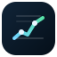
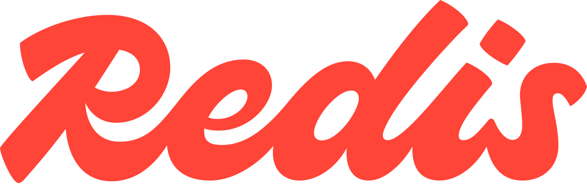

ShiftIQ is a finance research demo that shows how Redis can become the operational data plane under an existing LangGraph agent stack, instead of just another vector store sitting beside it.
“We are using LangGraph today to orchestrate agents. Where and how can Redis help, if at all?”
langgraph-checkpoint-redis persists graph state in Redis.class ResearchChunk(ContextModel):
__redis_key_template__ = "finance_researcher_research_chunk:{chunk_id}"
chunk_id: str = ContextField(
description="Unique research chunk identifier",
is_key_component=True,
)
company_id: str = ContextField(
description="Company foreign key",
index="tag",
)
ticker: str = ContextField(
description="Ticker symbol",
index="tag",
no_stem=True,
)
section_heading: str = ContextField(
description="Heading from filing, deck, or release",
index="text",
)
chunk_text: str = ContextField(
description="Narrative evidence used by the assistant",
index="text",
weight=1.8,
)search_researchchunk_by_textfilter_researchchunk_by_tickerfilter_researchchunk_by_document_idsearch_researchchunk_by_content_embedding_similarityLangGraph still does the orchestration. Redis Context Retriever gives it a structured, typed, domain-scoped tool surface over live Redis data.
async def create_agent(settings, internal_tools, cs_service, checkpointer=None):
model = ChatOpenAI(
model=settings.openai_chat_model,
temperature=0.2,
api_key=settings.openai_api_key,
)
tools = _make_internal_tools(internal_tools)
mcp_defs = await cs_service.list_tools()
mcp_tools = [_make_mcp_tool(t, cs_service) for t in mcp_defs]
tools.extend(mcp_tools)
return create_react_agent(
model,
tools,
prompt=prompt,
checkpointer=checkpointer,
)async def list_tools(self) -> list[dict[str, Any]]:
async with UnifiedClient() as client:
tools = await client.list_tools(self.settings.mcp_agent_key)
return [t if isinstance(t, dict) else t.model_dump() for t in tools]
async def call_tool(self, tool_name: str, arguments: dict[str, Any]) -> dict[str, Any]:
async with UnifiedClient() as client:
result = await client.query_tool(
agent_key=self.settings.mcp_agent_key,
tool_name=tool_name,
arguments=arguments,
)
return _normalize_tool_result_payload(result)The tool inventory is not hardwired in the prompt. The app discovers it from the active Context Retriever.
InternalToolDefinition(
name="query_finance_timeseries",
description=(
"Query RedisTimeSeries for one or more finance watchlist tickers "
"and return the exact TS.RANGE commands, sampled results, "
"and chart-ready trend data."
),
)redis_command = f"TS.RANGE {metadata['key']} {from_ts} {to_ts}"
raw_points = client.execute_command(
"TS.RANGE",
metadata["key"],
from_ts,
to_ts,
)| Series | Redis key shape | Query |
|---|---|---|
| Price | finance-researcher:ts:price:nvda:close |
TS.RANGE ... |
| Fundamentals | finance-researcher:ts:metric:mdb:revenue:quarter |
TS.RANGE ... |
def publish_domain_event(settings, domain, event):
client = create_redis_client(settings)
return str(client.xadd(domain_event_stream_key(domain), _encode_domain_event(event)))
async def stream_domain_events(settings, domain, *, cursor="$", history_limit=12):
client = create_async_redis_client(settings)
stream_key = domain_event_stream_key(domain)
...
messages = await client.xread({stream_key: last_id}, block=15000, count=50)
The stream key in the finance demo is finance-researcher:stream:events.
from langgraph.checkpoint.redis.aio import AsyncRedisSaver
async def create_checkpointer(settings: Settings) -> AsyncRedisSaver:
redis_url = build_redis_url(settings)
domain = get_active_domain(settings)
checkpointer = AsyncRedisSaver(
redis_url=redis_url,
checkpoint_prefix=domain.manifest.namespace.checkpoint_prefix,
checkpoint_write_prefix=domain.manifest.namespace.checkpoint_write_prefix,
)
await checkpointer.asetup()
return checkpointer| If you only use LangGraph | What Redis adds | Why the head of engineering should care |
|---|---|---|
| You still need tool adapters and data contracts. | Context Retriever generates the operational tool plane from the model. | Less custom glue and less drift as the domain grows. |
| Time-series answers are usually bolted on or precomputed. | RedisTimeSeries gives direct queryable trend data. | Lower latency, more transparency, better UX for chart-heavy workflows. |
| Live events need separate infra and UI wiring. | Redis Streams gives replay plus live tail in one primitive. | Agents can react to updates, not only search stale context. |
| State durability is another integration problem. | langgraph-checkpoint-redis handles it natively. |
Production path gets simpler, not more fragmented. |